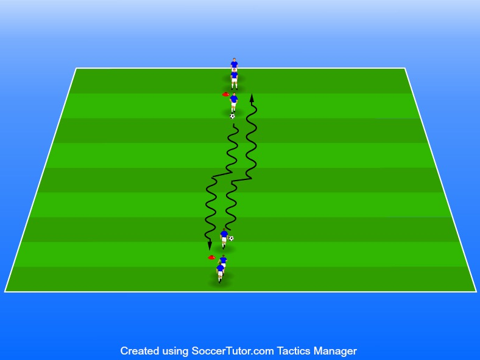

Driva, utmana, finta och dribbla samt medtagningar
Ålder 7–9 år
Arbete mellan två led på 15 m
Kollonövning. 4 – 6 spelare 1. De två första spelarna i leden har boll.
2 bollar/grupp
Utför fint vid möte på mitten.
Efter fint – passa eller lämna över till spelaren som står först i ledet.
Alternera mellan att använda passning och överlämning.
Se till att spelarna alltid använder sig utav medtagningar när de får bollen av sin medspelare.
Viktigt att tänka på att utföra finten i tid, hitta tajming för att undvika krock.
Driv alltid bollen med utsidan/vristen.
Passa alltid med insidan och gör medtagningarna med insidan.
Som ledare är det viktigt att ni poängterar att det inte är viktigt att göra finten snabbt. Det är alltid viktigast att ha kontroll på bollen i alla övningar ni instruerar.